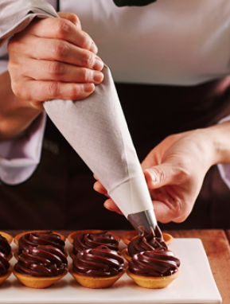

QUALITY INGREDIENTS
최고의 재료 선택
발로나 초콜릿, 끼리 치즈, 필라델피아 크림치즈 등
최상의 맛을 위한 재료를 엄선합니다.
좋은 재료와 정성스러운 손길로 케이크와 디저트를 만듭니다.
소중한 순간부터 평범한 하루까지, 한스가 달콤한 행복을 전합니다.
QUALITY INGREDIENTS
발로나 초콜릿, 끼리 치즈, 필라델피아 크림치즈 등
최상의 맛을 위한 재료를 엄선합니다.
HYGIENE & SAFETY
매일 엄격한 위생 관리와 작업 환경 점검으로
깨끗하고 안전한 제품을 만들기 위해 노력합니다.
HEALTHY DESSERT
단호박파이와 저당·저염·저칼로리 디저트 등
다양한 즐거움을 고민합니다.
HANS QUALITY
한스는 재료의 선택부터 위생 관리, 새로운 디저트의 연구까지
더 좋은 맛과 즐거움을 전하기 위해 노력합니다.

최고의 맛을 위해 발로나 초콜릿, 프랑스 끼리 치즈, 필라델피아 크림치즈처럼 제과제빵에 사용되는 좋은 재료를 선택합니다. 전 세계를 살피며 최상의 재료를 찾는 노력을 이어갑니다.
신선함과 풍미는 재료에서만 완성되지 않습니다. 한스는 작업 전 위생 관리와 작업 환경을 중요하게 생각하며, 깨끗하고 안전한 케이크를 전하기 위해 노력합니다.
단호박파이처럼 다양한 취향을 고려한 디저트를 선보이고, 저당·저염·저칼로리 디저트 개발에도 관심을 기울입니다. 더 많은 사람이 디저트를 즐길 수 있는 방법을 고민합니다.
HANS DESIGN
제품 디자인 하나하나에도 고객의 특별한 순간을 생각하는 한스의 마음을 담았습니다.
단순하지만 기본에 충실한 제품 디자인
케이크 본연의 재료와 맛에 집중합니다. 원재료와 관계없는 장식을 덜어내고 정직한 디저트의 모습을 담습니다.
포인트 컬러로 특별한 순간의 화려함을 더하되, 제품 디자인의 색상 대비와 조화를 중요하게 생각합니다.
심플한 외관 안에 풍부한 향과 맛을 담아, 케이크를 즐기는 순간을 더욱 특별하게 만듭니다.
케이크를 더욱 맛있고 행복하게 즐기는 방법
공정무역 원두를 사용한 한스만의 블렌딩 커피로 케이크의 달콤함과 재료의 풍성한 맛을 더욱 깊게 즐길 수 있도록 합니다.
넓은 테이블에서 소중한 사람들과 케이크를 나누며 즐거운 시간을 보낼 수 있도록 다양한 서비스를 준비합니다.
선물의 설렘을 전하는 리본 포장부터 케이크를 안전하게 담는 쇼핑백과 포장 박스까지 세심하게 고민합니다.
OUR HISTORY
1997년 작은 시작에서 오늘의 한스까지.
좋은 케이크를 향한 한스의 발자취를 소개합니다.
1997년 11월, 서울 양재동에서 한스케이크가 첫발을 내디뎠습니다. 케이크 전문 브랜드를 향한 여정이 시작됐습니다.
압구정에 첫 매장을 열며 더 많은 고객과 한스의 케이크를 만나는 접점을 넓혔습니다.
한스제과 법인을 설립하고, 같은 해 안양으로 본사와 공장을 확장 이전하며 새로운 성장 기반을 마련했습니다.
매장 운영을 이어가며 2014년 2월 한스케익 21호점을 열었습니다.
2017년 11월, 한스가 특별 주문 제작한 케이크가 한미 정상 국빈만찬의 디저트로 선정되며 주목받았습니다.
오늘의 작은 행복을 만나보세요.
HANS MENU